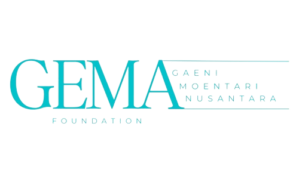

Our partners



Regional standards framework untuk harmonisasi pendidikan dan pelatihan pariwisata di seluruh negara anggota ASEAN
The Common ASEAN Tourism Curriculum (CATC) is a regional standards framework designed to harmonize tourism education and training across ASEAN member states. It serves as the foundation for the ASEAN Mutual Recognition Agreement on Tourism Professionals (MRA-TP), which facilitates the mobility of qualified tourism professionals across ASEAN countries.
The CATC was developed to address the varying levels of tourism education and workforce skills in the region, ensuring consistent, high-quality standards for tourism-related jobs. The CATC is designed to support tourism professionals by providing a structured, competency-based approach to education, training, and certification.
Menyeragamkan standar pendidikan dan pelatihan pariwisata di seluruh negara anggota ASEAN
Mengembangkan kompetensi profesional pariwisata sesuai standar regional
Mendorong integrasi regional dalam sektor pariwisata melalui standar yang seragam
Sekolah-sekolah yang telah mengimplementasikan kurikulum CATC dalam program pendidikan pariwisata mereka
Dokumentasi lengkap kurikulum CATC dan modul-modul yang tersedia untuk implementasi